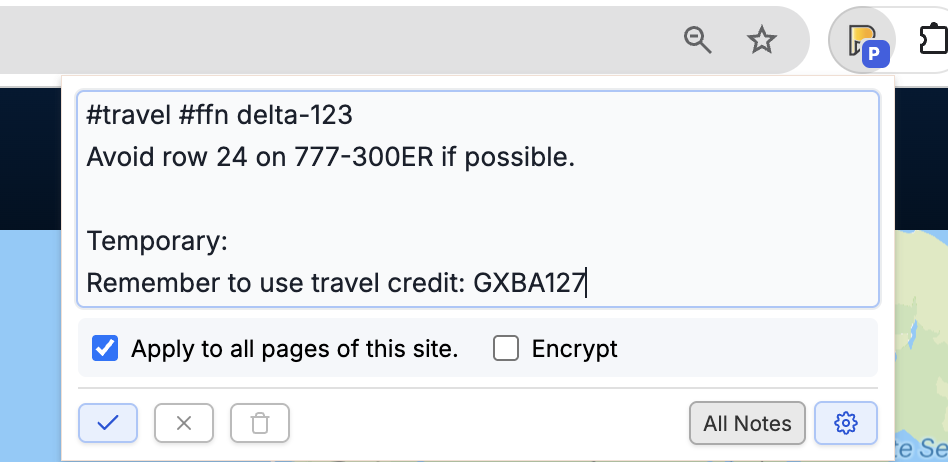
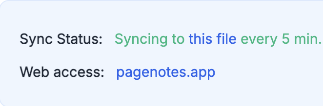

Give it a go in the next minute.

If Alt+P does nothing, your browser has already given that combination to something else — it is a suggestion, not a reservation. Pick another on your browser's extension shortcuts page; the FAQ has the steps.
Optional, and the one thing worth knowing on day one.
Turn on sync in Settings to make your notes follow you to your other devices, and to any browser at pagenotes.app — stored in your own Google Drive, never on a Page Notes server.

That's it — you're set. Open a page you keep forgetting things about, and leave yourself a note.
There is more when you want it — encrypted notes, a side panel, tags and search across everything, notes that show themselves on the page. Learn more at pagenotes.manugarg.com, or in the FAQ. This page is only shown once; every setting lives in Settings.